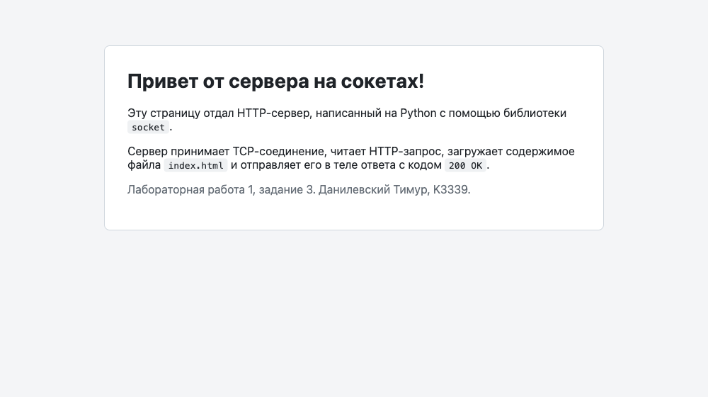
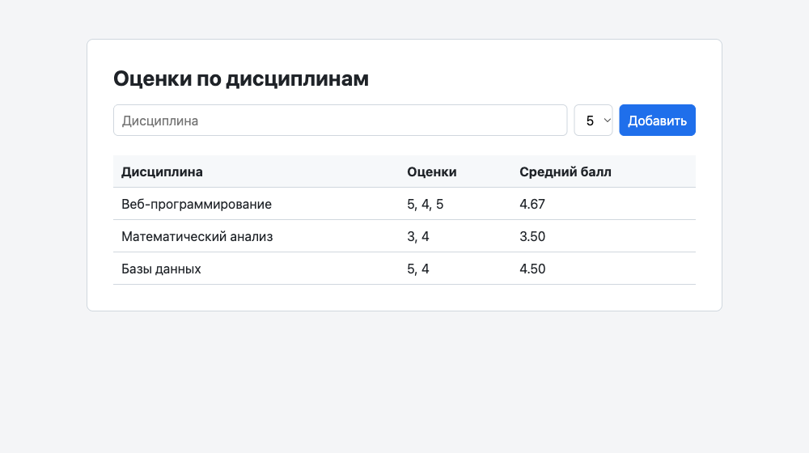

Лабораторная работа 1. Работа с сокетами
Цель: овладеть практическими навыками работы с сокетами и построения простейших клиент-серверных приложений.
- Студент: Данилевский Тимур, группа K3339
- Вариант задания 2: 3 (площадь трапеции)
- Язык: Python 3.10, библиотеки
socketиthreading - Код:
students/K3339/Danilevskiy_Timur/laboratory_work_1/
| Задание | Протокол | Порт | Файлы |
|---|---|---|---|
| 1. Обмен приветствиями | UDP | 9090 | task1/server.py, task1/client.py |
| 2. Площадь трапеции | TCP | 9091 | task2/server.py, task2/client.py |
| 3. Отдача HTML-страницы | HTTP поверх TCP | 8080 | task3/server.py, task3/index.html |
| 4. Многопользовательский чат | TCP + потоки | 9092 | task4/server.py, task4/client.py |
| 5. Веб-сервер с оценками | HTTP поверх TCP | 8081 | task5/server.py |
Все серверы слушают 127.0.0.1 и останавливаются по Ctrl+C.
Задание 1. Обмен сообщениями по UDP
Условие. Клиент отправляет серверу сообщение «Hello, server», сервер выводит его и отвечает «Hello, client», клиент выводит ответ.
Как это работает
UDP — протокол без установления соединения. Сокет создаётся с типом
SOCK_DGRAM, а данные передаются отдельными датаграммами:
- сервер привязывает сокет к адресу (
bind) и в цикле ждёт датаграммы черезrecvfrom(), которая возвращает данные и адрес отправителя; - ответ отправляется по этому адресу через
sendto(); - у клиента нет
connect(): он сразу отправляет датаграмму на адрес сервера.
UDP не гарантирует доставку, поэтому клиент ждёт ответ с таймаутом (settimeout),
чтобы не зависнуть, если сервер не запущен.
data, addr = sock.recvfrom(BUFFER_SIZE)
print(f"Сообщение от {addr[0]}:{addr[1]}: {data.decode('utf-8')}")
sock.sendto("Hello, client".encode("utf-8"), addr)
Пример работы
$ python task1/server.py
UDP-сервер запущен на 127.0.0.1:9090
Сообщение от 127.0.0.1:54396: Hello, server
Полный код: task1/server.py
Полный код: task1/client.py
Задание 2. Площадь трапеции по TCP (вариант 3)
Условие. Клиент запрашивает у сервера математическую операцию, параметры вводятся с клавиатуры. Сервер считает и возвращает результат.
Площадь трапеции: S = (a + b) / 2 · h, где a и b — основания, h — высота.
Протокол
TCP устанавливает соединение (SOCK_STREAM): сервер вызывает listen() и accept(),
клиент вызывает connect(). На каждый запрос открывается одно соединение:
- клиент отправляет строку
"a b h", например"3.0 5.0 4.0"; - сервер разбирает числа, проверяет их и отвечает строкой
"Площадь трапеции: 16.00"или текстом ошибки; - соединение закрывается.
Ввод проверяется дважды: клиент не даёт ввести не число или неположительное значение, а сервер не доверяет входным данным и проверяет их сам.
def handle_request(data):
try:
a, b, h = map(float, data.split())
except ValueError:
return "Ошибка: нужно передать три числа через пробел: a b h"
if a <= 0 or b <= 0 or h <= 0:
return "Ошибка: основания и высота должны быть положительными"
return f"Площадь трапеции: {trapezoid_area(a, b, h):.2f}"
Пример работы
$ python task2/client.py
Площадь трапеции: S = (a + b) / 2 * h
Основание a: abc
Введите число
Основание a: -1
Значение должно быть положительным
Основание a: 2,5
Основание b: 7.5
Высота h: 4
Площадь трапеции: 20.00
$ python task2/server.py
TCP-сервер запущен на 127.0.0.1:9091
Запрос от 127.0.0.1:63688: '2.5 7.5 4.0'
Ответ: Площадь трапеции: 20.00
Полный код: task2/server.py
Полный код: task2/client.py
Задание 3. Отдача HTML-страницы по HTTP
Условие. Реализовать серверную часть: при подключении клиент получает
HTTP-сообщение со страницей из файла index.html.
Как это работает
HTTP — текстовый протокол поверх TCP. Сервер читает запрос из сокета,
берёт из стартовой строки (GET / HTTP/1.1) путь и формирует ответ:
HTTP/1.1 200 OK
Content-Type: text/html; charset=utf-8
Content-Length: 1550
Connection: close
<!DOCTYPE html>
...
- строки заголовков разделяются
\r\n, заголовки от тела отделяет пустая строка; Content-Length— длина тела в байтах (кириллица в UTF-8 занимает 2 байта на символ), поэтому файл читается сразу какbytes;charset=utf-8нужен, чтобы браузер правильно показал русский текст;- на запросы других путей (например,
/favicon.ico, который браузер запрашивает сам) сервер отвечает404 Not Found.
def build_response(status, content_type, body):
head = (
f"HTTP/1.1 {status}\r\n"
f"Content-Type: {content_type}\r\n"
f"Content-Length: {len(body)}\r\n"
"Connection: close\r\n"
"\r\n"
)
return head.encode("utf-8") + body
Пример работы
$ python task3/server.py
HTTP-сервер запущен: http://127.0.0.1:8080/
127.0.0.1:63690 — GET / HTTP/1.1
127.0.0.1:63691 — GET /favicon.ico HTTP/1.1

Полный код: task3/server.py
Полный код: task3/index.html
Задание 4. Многопользовательский чат
Условие. Реализовать многопользовательский чат на socket и threading:
пользователи идентифицируются по имени и могут выйти из чата.
Реализован вариант на TCP. Клиент — один скрипт task4/client.py,
каждый пользователь запускает его в отдельном терминале.
Устройство сервера
- главный поток в цикле принимает подключения (
accept) и для каждого клиента запускает потокhandle_client; - подключённые пользователи хранятся в словаре
clientsвида{сокет: имя}, по нему сервер рассылает сообщения всем участникам (broadcast); - словарь общий для всех потоков, поэтому доступ к нему защищён
threading.Lock; - TCP передаёт поток байтов, а не отдельные сообщения, поэтому каждое сообщение
заканчивается символом
\n, а читается построчно черезconn.makefile().
clients = {} # сокет клиента -> имя пользователя
clients_lock = threading.Lock()
def broadcast(text, exclude=None):
"""Отправляет сообщение всем подключённым, кроме exclude."""
with clients_lock:
recipients = [conn for conn in clients if conn is not exclude]
for conn in recipients:
try:
send_line(conn, text)
except OSError:
pass # клиент отключился — его удалит собственный поток
Протокол
| Шаг | Клиент → сервер | Сервер → клиент |
|---|---|---|
| Регистрация | имя пользователя | NAME_OK, NAME_TAKEN (имя занято) или NAME_EMPTY |
| Сообщение | текст | всем остальным: [Имя]: текст |
/users |
команда | * Сейчас в чате: ... |
/exit |
команда | соединение закрывается, остальным: * Имя вышел из чата |
Если клиент отключился без /exit (закрыл терминал, Ctrl+C), сервер всё равно
удалит его в блоке finally и сообщит остальным.
Устройство клиента
Клиенту нужно одновременно ждать ввод с клавиатуры и принимать сообщения от сервера, поэтому работа разделена на два потока:
- главный поток читает
input()и отправляет сообщения на сервер; - поток
receiveчитает строки из сокета и печатает их.
leaving = threading.Event()
threading.Thread(target=receive, args=(reader, leaving), daemon=True).start()
Пример работы (три пользователя)
Введите имя: Alice
* Добро пожаловать, Alice! Команды: /users — участники, /exit — выход
* Bob вошёл в чат
* Carol вошёл в чат
Всем привет!
[Bob]: Привет, Alice
* Bob вышел из чата
Bob ушёл
* Carol вышел из чата
/exit
Вы вышли из чата
Введите имя: Alice
Это имя уже занято, выберите другое
Введите имя: Bob
* Добро пожаловать, Bob! Команды: /users — участники, /exit — выход
* Carol вошёл в чат
[Alice]: Всем привет!
Привет, Alice
/exit
Вы вышли из чата
Введите имя:
Имя не может быть пустым
Введите имя: Carol
* Добро пожаловать, Carol! Команды: /users — участники, /exit — выход
[Alice]: Всем привет!
[Bob]: Привет, Alice
/users
* Сейчас в чате: Alice, Bob, Carol
* Bob вышел из чата
[Alice]: Bob ушёл
/exit
Вы вышли из чата
$ python task4/server.py
Сервер чата запущен на 127.0.0.1:9092
Alice подключился (127.0.0.1:63736)
Bob подключился (127.0.0.1:63735)
Carol подключился (127.0.0.1:63734)
[Alice]: Всем привет!
[Bob]: Привет, Alice
Bob отключился
[Alice]: Bob ушёл
Carol отключился
Alice отключился
Полный код: task4/server.py
Полный код: task4/client.py
Задание 5. Веб-сервер для оценок (GET и POST)
Условие. Написать на socket веб-сервер, который принимает и записывает
дисциплину и оценку (POST) и отдаёт HTML-страницу со всеми оценками (GET).
Запрос разбирается вручную.
Эндпоинты
| Метод | URL | Параметры | Ответ |
|---|---|---|---|
| GET | / |
— | 200 OK, HTML-страница с формой и таблицей оценок |
| POST | / |
тело формы: discipline=<название>&grade=<2..5> |
303 See Other с Location: / |
| другие | / |
— | 405 Method Not Allowed |
| любой | другой путь | — | 404 Not Found |
При ошибках в запросе (нет названия, оценка не от 2 до 5, некорректная стартовая строка)
сервер возвращает 400 Bad Request со страницей, где описана ошибка.
Модель данных
Оценки сгруппированы по дисциплинам: каждой дисциплине соответствует одна запись со списком её оценок. Для этого используется словарь, где ключ — название дисциплины, а значение — список оценок:
grades = {
"Веб-программирование": [5, 4, 5],
"Математический анализ": [3, 4],
"Базы данных": [5, 4],
}
Новая оценка добавляется одной строкой: если дисциплины ещё нет, setdefault
создаст пустой список.
Порядок дисциплин сохраняется, так как в Python 3.7+ словари помнят порядок вставки.
Лишние пробелы в названии убираются, чтобы " Базы данных " и "Базы данных"
попадали в одну запись.
Разбор HTTP-запроса
Сервер построен по схеме класса MyHTTPServer:
serve_forever → serve_client → parse_request → parse_headers → handle_request → send_response.
-
Стартовая строка. Читается первая строка и разбивается на метод, путь и версию:
-
Заголовки. Строки
Имя: значениечитаются до пустой строки. Имена приводятся к нижнему регистру, потому что регистр в них не важен. -
Тело (для POST). После заголовков читается ровно
Content-Lengthбайт. Браузер отправляет форму в форматеapplication/x-www-form-urlencoded(discipline=%D0%91%D0%B0...&grade=5), он декодируется черезurllib.parse.parse_qs: -
Ответ на POST. Сервер возвращает
303 See OtherсLocation: /, и браузер сам делаетGET /(паттерн Post/Redirect/Get). Поэтому обновление страницы не отправляет форму повторно.
Защита от XSS
Название дисциплины вводит пользователь, поэтому перед вставкой в HTML оно
экранируется через html.escape. Иначе строка вида <script>...</script>
выполнилась бы в браузере.
Пример работы

$ curl -i -X POST --data-urlencode "discipline=Веб-программирование" -d grade=5 http://127.0.0.1:8081/
HTTP/1.1 303 See Other
Location: /
Content-Length: 0
$ curl -X POST --data-urlencode "discipline=Физика" -d grade=7 http://127.0.0.1:8081/
...
<h1>400 Bad Request</h1>
<p>Оценка должна быть целым числом от 2 до 5</p>
$ curl -i -X DELETE http://127.0.0.1:8081/
HTTP/1.1 405 Method Not Allowed
$ python task5/server.py
Сервер grades-server запущен: http://127.0.0.1:8081/
GET / -> 200 OK
POST / -> 303 See Other
GET / -> 200 OK
POST / -> 400 Bad Request
GET /nope -> 404 Not Found
DELETE / -> 405 Method Not Allowed
Полный код: task5/server.py
Вывод
В ходе работы изучены основы сетевого взаимодействия через сокеты:
- разница между UDP (датаграммы без соединения,
sendto/recvfrom) и TCP (поток байтов с установкой соединения,connect/accept/sendall/recv); - устройство протокола HTTP: стартовая строка, заголовки, пустая строка, тело,
ручной разбор запроса и формирование ответа с правильным
Content-Length; - обработка нескольких клиентов одновременно с помощью потоков и синхронизация
доступа к общим данным через
Lock; - разделение потока TCP на отдельные сообщения с помощью разделителя
\n.